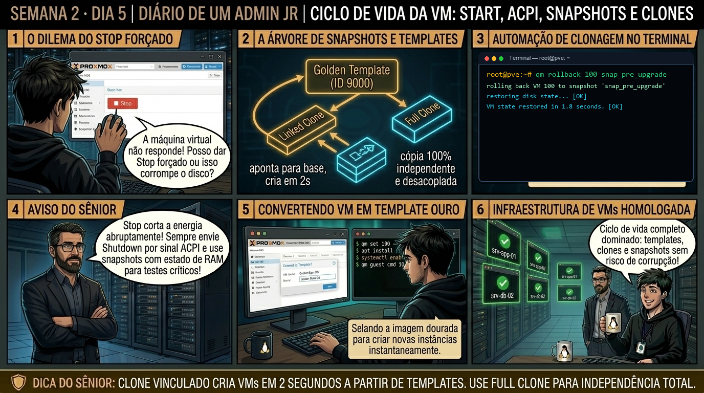

DIARIO DE UM ADMIN JR. | PROXMOX VE & PBS — DA BASE AO CLUSTER
🔗 Conecta com o Dia 4: Você domina o QEMU Guest Agent e a consistência de filesystem. Hoje você fecha a Semana 2 aprendendo a gerenciar o ciclo de vida completo de VMs corporativas: a diferença vital entre Snapshots com e sem RAM, e como transformar uma VM em Template para gerar dezenas de clones em segundos.
🔓 Privilégio de hoje: Gestão de Ciclo de Vida, Snapshots e Provisionamento. Você cria templates imutáveis e provisiona clones vinculados com economia de disco.
Semana 2 · Dia 5 | Nível Júnior — Máquinas Virtuais KVM
Ciclo de Vida da VM: Start, ACPI, Snapshots e Clones
Gerenciamento profissional de estados, snapshots com/sem RAM, Templates e Linked Clones
ANTES DE ALTERAR, OBSERVE. DEPOIS DE ALTERAR, VALIDE.

1. O chamado
Você recebeu o chamado #2005: 'A equipe de testes precisa provisionar 10 máquinas virtuais idênticas para homologação de uma nova versão de software, mas o storage possui apenas 80GB livres e cada VM completa ocupa 40GB. Além disso, antes de aplicar um patch crítico no servidor de produção 104, o chamado exige: (1) Criar um Snapshot com RAM; (2) Converter uma VM base limpa em Template (vmtarget); (3) Entender a diferença entre Full Clone e Linked Clone; e (4) Provisionar os clones em menos de 10 segundos.'
💡 Passa o mouse nas palavras destacadas pra ver uma dica rápida — clica se quiser a explicação completa com analogia.
2. O sênior te conta
🧑🏫 antes dos termos técnicos, a história de hoje
Hoje o time de desenvolvimento pediu autorização para aplicar uma migração de esquema de banco de dados arriscada. O Júnior criou um snapshot da VM 100, virou pros desenvolvedores e disse: 'Podem rodar a migração, se der ruim nós temos backup completo no snapshot'. Quase caí da cadeira.
Chamei o Júnior e expliquei a diferença vital entre Snapshot e Backup: um snapshot não é uma cópia separada; ele é apenas uma marcação de blocos Copy-on-Write no mesmo storage. Se o storage falhar, você perde a VM e todos os snapshots juntos! Além disso, snapshots acumulados degradam severamente os IOPS do disco.
Mostrei pra ele como usar snapshots do jeito certo: criar antes da intervenção com qm snapshot (salvando opcionalmente o estado da RAM com vmstate=1), validar o resultado da aplicação e, se tudo der certo, deletar o snapshot imediatamente para consolidar os blocos. Hoje você vai dominar a arte do rollback seguro em menos de 2 segundos.
3. Decodificador de conceitos
Clica em qualquer termo pra ver a definição completa e uma analogia do dia a dia:
4. Ferramentas e leitura da evidência
Comando / Parâmetro
O que observar e por que importa
qm snapshot 104 snap_pre_patch --vmstate 1
Cria um snapshot do disco e salva o estado da memória RAM da VM 104 (--vmstate 1).
qm rollback 104 snap_pre_patch
Reverte a VM 104 instantaneamente para o estado exato do snapshot selecionado.
qm template 900
Converte a máquina virtual 900 em um Template imutável de provisionamento.
qm clone 900 105 --name srv-clone01
Cria um Linked Clone instantâneo a partir do Template 900.
# 1. Criação de Snapshot com Memória RAM em Produção
$ qm snapshot 104 pre_upgrade_v2 --vmstate 1 --description "Snapshot com RAM antes do patch"
TASK OK
# 2. Conversão da VM base em Template Imutável
$ qm template 9000
TASK OK
# 3. Provisionamento instantâneo de Linked Clone em 2 segundos
$ qm clone 9000 105 --name srv-app-qa01
clone 9000 to 105: create linked clone 'vm-105-disk-0'
TASK OK
# 4. Inspeção do arquivo de configuração do clone vinculado
$ cat /etc/pve/qemu-server/105.conf | grep -E 'scsi0'
scsi0: local-zfs:base-9000-disk-0/vm-105-disk-0,discard=on,size=40G
5. Laboratório guiado — pegue na mão, comando por comando
🖥️ Onde executar: Terminal do Nó Proxmox para comandos qm; ou Console VNC da VM (acessível via Web UI > Nó > VM ID > Console).
Segurança: Execute as alterações em VMs de laboratório ou teste. Não altere parâmetros de máquinas de produção sem janela homologada.
Ação: Crie um snapshot de segurança salvando o estado do disco antes da manutenção.
qm snapshot 100 snap_pre_upgrade --description 'Antes da atualizacao do sistema'
Resultado esperado: Snapshot registrado na árvore de estados da VM.
Por que fizemos isso: O comando qm snapshot cria um ponto de restauração instantâneo da VM, salvando a tabela de blocos e opcionalmente o estado da memória RAM.
Cilada comum: Usar snapshots como substituto de backup; snapshots acumulam escritas Copy-on-Write no storage e degradam o desempenho ao longo do tempo.
Ação: Crie um segundo snapshot salvando também o estado da memória RAM.
qm snapshot 100 snap_com_ram --vmstate 1
Resultado esperado: Árvore hierárquica exibindo o snapshot criado e o ponteiro atual 'current'.
Por que fizemos isso: Marcar a opção vmstate=1 congela a memória RAM no snapshot, permitindo que a VM retorne exatamente no mesmo milissegundo de execução.
Cilada comum: Salvar o estado da memória RAM em storages lentos durante horário de pico, pausando a VM por vários minutos durante a gravação.
Ação: Simule uma falha ou alteração indesejada no sistema operacional convidado.
# dentro da VM:
touch /etc/arquivo_teste_falha.txt
Resultado esperado: VM revertida instantaneamente para o ponto do snapshot.
Por que fizemos isso: Simular uma falha intencional na VM demonstra a importância de ter um ponto de retorno seguro antes de aplicar patches e migrações.
Cilada comum: Aplicar atualizações arriscadas de pacotes ou esquemas de banco de dados sem criar um snapshot prévio de salvaguarda.
Ação: Execute o rollback instantâneo retornando a VM ao estado anterior em 2s.
qm rollback 100 snap_pre_upgrade
Resultado esperado: Snapshot consolidado e excluído com sucesso.
Por que fizemos isso: Executar o qm rollback reverte o disco e a memória da VM para o estado anterior em menos de 5 segundos.
Cilada comum: Executar rollback sem avisar a equipe de desenvolvimento, revertendo dados gravados por outros usuários após o ponto de snapshot.
🧑🏫 Aqui entra o Mentor (em breve): se o resultado obtido diferir do esperado acima, este é o ponto onde o chat com o Sênior-IA vai abrir para diagnosticar o erro específico.
Ação: Exclua o snapshot temporário consolidando os blocos de disco no storage.
qm delsnapshot 100 snap_pre_upgrade
Resultado esperado: Linked Clone provisionado em menos de 3 segundos no storage ZFS.
Por que fizemos isso: Remover o snapshot com qm delsnapshot consolida os blocos no storage e elimina o overhead de leitura em árvores de snapshot antigas.
Cilada comum: Acumular dezenas de snapshots antigos esquecidos por meses, esgotando o espaço em disco do storage pool.
6. Antes de ver as opções — tenta responder
🧠 Recall ativo: Qual é a diferença fundamental de consumo de storage e tempo de criação entre um 'Full Clone' e um 'Linked Clone' no Proxmox VE?
Um **Full Clone** copia 100% de todos os blocos do disco da VM original, sendo totalmente independente, mas consumindo muito espaço físico e demorando minutos para ser gerado. Um **Linked Clone** exige que a VM original seja um Template imutável; ele cria apenas um disco delta de leitura/gravação (Copy-on-Write) que referencia os blocos do Template, consumindo quase zero espaço inicial e sendo provisionado em apenas 2 a 3 segundos.
QUESTÃO 1 de 3
7. Questão comentada — clica numa alternativa
Por que converter uma máquina virtual em Template é uma operação irreversível diretamente no Proxmox VE?
💡 Analogia do Sênior para Fixar: Na arquitetura do Proxmox sobre Ciclo de Vida da VM: Start, ACPI, Snapshots e Clones: O KVM/QEMU opera como o motorista dedicado de cada passageiro, alocando recursos virtuais em contato direto com o kernel.
QUESTÃO 2 de 3 — cenário de erro real
7.1 Snapshot com RAM travando por falta de espaço no storage
Você tentou criar um snapshot com a opção 'Include RAM' ativa em uma VM com 64GB de memória alocada, e a tarefa falhou:
$ qm snapshot 104 snap_com_ram --vmstate 1
TASK ERROR: VM 104 snapshot failed: not enough space in storage 'local-zfs' to save 64GB RAM state
Qual é a regra técnica que governa o armazenamento de snapshots com memória RAM?
💡 Analogia do Sênior para Fixar: Ao diagnosticar problemas em Ciclo de Vida da VM: Start, ACPI, Snapshots e Clones: É como inspecionar as conexões do storage e o barramento PCIe antes de declarar falha de software.
QUESTÃO 3 de 3 — detalhe que confunde todo iniciante
7.2 Como transformar um Linked Clone em uma VM independente se você precisar apagar o Template?
Você criou a VM 105 como Linked Clone do Template 9000, mas agora a equipe deseja deletar o Template 9000 sem perder a VM 105:
Qual procedimento oficial converte o disco do Linked Clone em um disco completo e desvinculado?
💡 Analogia do Sênior para Fixar: A governança e resiliência em Ciclo de Vida da VM: Start, ACPI, Snapshots e Clones: Funciona como a política de contenção e redundância do datacenter, garantindo que o cluster nunca perca quorum.
8. Procedimento profissional
Antes de intervenções de risco em produção, tire um Snapshot com descrição clara e registre a data e hora.
Para atualizações de aplicações sensíveis ao estado de execução, utilize --vmstate 1 (Snapshot com RAM) garantindo retorno ao milissegundo exato.
Para padronização de SO, crie uma VM perfeita (com QEMU Guest Agent e cloud-init) e converta-a em Template imutável com qm template ID.
Utilize Linked Clones para ambientes efêmeros, laboratórios, homologação e pipelines de CI/CD com economia máxima de storage.
Utilize Full Clones quando a nova VM for um servidor de produção permanente e independente que não deve ter dependências com templates base.
Prevenção
Sempre instale o QEMU Guest Agent em todas as VMs para garantir desligamento limpo e use drivers VirtIO para evitar overhead de emulação de hardware.
9. Validação e encerramento
Você domina o ciclo de vida operacional de máquinas virtuais no Proxmox VE.
Você compreende o consumo e funcionamento de Snapshots com e sem RAM.
Você sabe quando utilizar Full Clones (independência) e Linked Clones (velocidade e economia).
A Semana 2 (Máquinas Virtuais KVM) foi concluída com 100% de aproveitamento e maestria técnica!
Rollback e limites
Em caso de falha de teste, reverta a VM para o snapshot homologado ou destrua os clones vinculados de homologação com qm destroy ID --purge.
💡 Sobre repetição espaçada: O conceito de Copy-on-Write e provisionamento instantâneo será aprofundado na Semana 3 com Containers de Sistema LXC e na Semana 4 com ZFS Clones.
10. Resposta final
Alternativa correta: B. A resposta correta é a B: converter uma VM em Template é uma operação irreversível para torná-la uma base imutável e proteger todos os clones vinculados contra corrupção.
🔓 O que você desbloqueou hoje
🏆 PARABÉNS! Você concluiu a SEMANA 2 com distinção! Você domina arquiteturas SeaBIOS/OVMF, CPU host, VirtIO SCSI Single, QEMU Guest Agent e Ciclo de Vida de Snapshots e Clones. Na próxima semana (Semana 3 — Containers de Sistema LXC), você aprenderá como rodar centenas de instâncias Linux ultraleves compartilhando o Kernel com segurança corporativa!